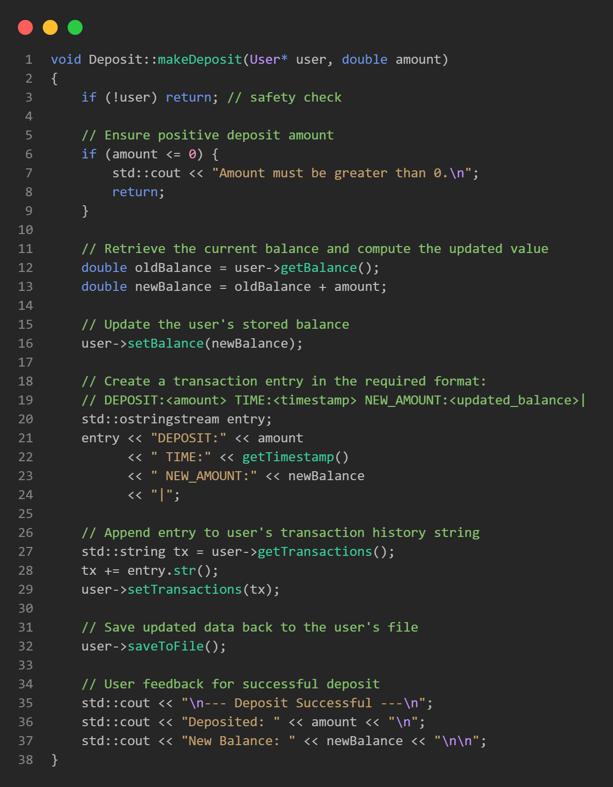
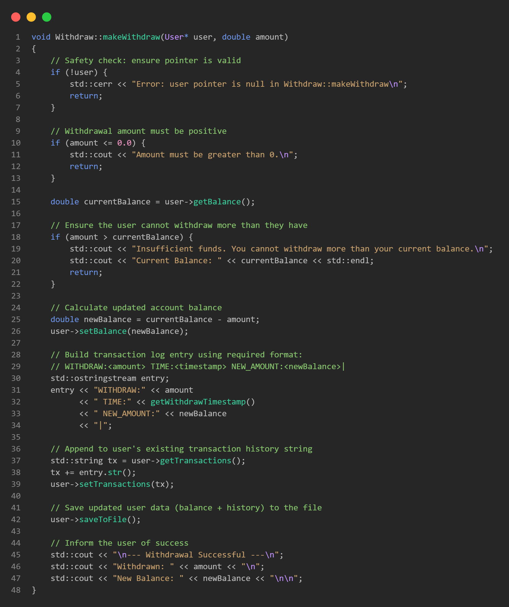

Bank Account
Management System
A modular C++ console application that simulates a basic banking system, built with object-oriented design, text-file persistence, and a manager-level admin panel.
Functional Requirements & Goals
Functional Requirements
- Create new user accounts with:
- First & last name
- Unique username (validated)
- Password
- Account type: Checking or Saving
- Initial deposit ≥ $20
- Allow existing users to log in.
- Provide account operations:
- Deposit
- Withdraw
- View account info
- View transaction history
- Persist users and balances between runs.
Non-Functional Goals
- Use clean object-oriented design.
- Minimize global state; keep logic encapsulated in classes.
- Separate user responsibilities from manager responsibilities.
- Make the code easy to extend (e.g., more account types).
- Keep dependencies simple: standard C++ & filesystem.
These goals influenced decisions like using text files over a database and using polymorphism for account types.
System Architecture Overview
High-Level Modules
- Main – entry point; shows the main menu and routes to user login, account creation, and manager login.
- User – represents an individual customer; knows how to load and save itself from a text file.
- BankAccount – abstract base class that defines operations every account must support (deposit, withdraw, menu).
- CheckingAccount / SavingAccount – concrete account types that implement the abstract behavior.
- Transactions – parses and prints transaction history and records initial deposits.
- Manager – namespace with admin functions and menus.
- Menu – reusable UI component for displaying menus.
File & Directory Layout
Users/– one file per user:Users/<username>.txt
Managers/– directory reserved for manager data; currently includesmanagers.txt.- User::createUserDirectory():
- Ensures required directories exist on startup.
- Initializes
id_countbased on files inUsers/.
This structure makes it easy to inspect and debug account files by hand during development and testing.
Conceptual UML
Key Classes & Design Decisions
User Class
- Represents one bank customer.
- Keeps track of:
userid– auto-incremented ID.- name, username, password.
- balance and account type.
- full transaction history as a single string.
- Key responsibilities:
- createAccount: interactive prompts with validation.
- saveToFile and loadUserFromFile: simple persistence.
- listUsers: used by the manager to inspect all accounts.
Design choice: we keep transactions as one large string. For this project scale, it is simpler than modeling a full separate transaction table or database.
BankAccount & Derived Classes
- BankAccount is an abstract base class:
- Exposes the
AccountMenufunction. - Declares virtual
deposit,withdraw,getAccountType.
- Exposes the
- CheckingAccount and SavingAccount:
- Implement banking operations by delegating to
Deposit::makeDepositandWithdraw::makeWithdraw. - Return their own account type strings.
- Implement banking operations by delegating to
- Polymorphism lets us select the right behavior at runtime based on the user’s saved account type.
Menu & Reuse
- The Menu class is a tiny helper that:
- Takes a title and a list of string options.
- Prints them with numbered choices.
- Is reused for: Main Menu User Account Menu Manager Menu
- This keeps our UI code consistent and avoids copy-pasting menu loops.
How We Fulfill OOP Requirements: Pointers & Inheritance
Use of Pointers in the Design
- BankAccount owns a pointer to the current User so account operations modify the logged-in user directly.
- Deposit, Withdraw, and
Transactions modules all accept
User*parameters to update the same object in memory. - Manager functions use
User::GetUser(), which returns a dynamically allocatedUser*loaded from disk.
Using pointers lets us share the same User object across
BankAccount, Transactions, Deposit, Withdraw, and Manager modules
without copying the entire struct.
Inheritance & Polymorphism in Account Types
- BankAccount is an abstract base class with pure virtual methods.
- CheckingAccount and SavingAccount
derive from it and override
deposit,withdraw, andgetAccountType. - At runtime, we choose the correct derived type based on the
user’s account type field and call methods through a
BankAccount*pointer.
This structure lets new account types be added later (e.g. CreditAccount) without changing the rest of the program logic.
Runtime Selection of Derived Types (Polymorphic Use)
When a user logs in, we read their account_type and create a
BankAccount* that points to either a
CheckingAccount or SavingAccount. This is where
inheritance and pointers come together.
The project requirement to demonstrate pointers and inheritance is satisfied here: we dynamically allocate derived objects and invoke behavior through a base-class pointer.
Program Execution Flow
High-Level Flow
Main.cpp calls
User::createUserDirectory() to ensure folders exist and
initializes the user ID counter.
A
Menu object displays options:
Create Account, Login, Manager Login, Exit.
If chosen,
User::createAccount() walks the user through
all inputs, validates, and saves the new file (including an
INITIAL_DEPOSIT transaction).
Login searches for
Users/<username>.txt, checks the
Password: line, and on success loads data into a
User object.
Based on
account_type, the program creates either a
CheckingAccount or SavingAccount and calls
AccountMenu(user).
The user can repeatedly Deposit, Withdraw, view Account Info, and View Activity until they choose Logout.
If Manager Login is chosen and credentials are correct,
Manager::managerMenu() runs a similar loop for admin
operations.
When all menus exit, the program terminates cleanly.
Transaction Logging & Parsing
Log Format
Each entry uses this unified pattern:
- TYPE ∈ {INITIAL_DEPOSIT, DEPOSIT, WITHDRAW}
- amount – how much money was moved.
- TIME – timestamp when the action happened.
- NEW_AMOUNT – balance after the operation.
Entries are concatenated into a single string and stored on the
Transaction History: line in the user’s file.
Viewing History (User & Manager)
Transactions::parse:- Splits the history string on
|. - Parses each entry into a
Transactionstruct.
- Splits the history string on
Transactions::print(user):- Pretty-prints a table of Type, Amount, Time, and Balance After.
- Used by:
- User’s “View Activity” menu option.
- Manager’s “View User’s Transaction History” option.
- This makes it easy to see the entire life of an account during a demo.
Deposit Module
- Validates a positive amount.
- Updates the user’s balance.
- Appends a
DEPOSITentry to transactions. - Calls
saveToFile()to persist changes.
Withdraw Module
- Rejects non-positive amounts.
- Checks that the amount does not exceed balance.
- On success, updates balance and logs a
WITHDRAWentry. - On failure, prints a message and leaves state unchanged.
- Transactions::addInitialDeposit is called during account creation.
Manager Panel & Administrative Tools
Manager Login
- Manager logs in with a username and password.
- You can create a manager account in the
Managers/managers.txtwith a username and password. - On success, the manager sees a dedicated menu with admin options.
In a real system we would store managers separately and use stronger authentication.
Manager Menu Options
- View All Users – lists all accounts with IDs, names, usernames, balances, and account types.
- View A User – prints a single user’s summary.
- View A User’s Transaction History – calls
Transactions::printfor any username. - Delete A User – removes that user’s file.
- Delete All Users – wipes all account files after a confirmation prompt.
- Logout – returns to the main menu.
Testing Strategy & Results
Manual Test Cases
- Account Creation:
- Valid vs invalid usernames (spaces, duplicates).
- Deposits below the $20 minimum.
- Cancelling creation with
-1.
- Login:
- Wrong username.
- Wrong password.
- Successful login on a newly created account.
- Transactions:
- Multiple deposits in a row.
- Withdraw equal to full balance.
- Withdraw greater than balance (should be rejected).
Results & Observations
- Balance and transaction history remained consistent even across multiple program runs.
- Manager tools successfully reflected the effects of operations performed by users.
- Text-file storage made debugging easy (we could open the file and check the “ground truth” state).
The system meets all required functionality for the project and is structured to be extended in future iterations.
Team Contributions
Jack London
-
Implemented the
Menu Objectbase class to be used for all pages with a menu UI. -
Implementd
Manager.cppandManager.hto create the manager functions. - Implemented OOP designs and features to optimise the apps efficency and productivity for both users and us as software developers.
Ethan Christman
- Implemented
user.cppanduser.hfunctions which handle file creation, deletion, and userdata. - Implemented
login.cppandlogin.h, used for loggin users in. Additionally added functionality toManager.cppto login from ourManagers/managers.txt. - Tested and fixed any bugs or issues that showed up during the development process.
David Desing
- Implemented
withdraw.cppandwithdraw.hto remove the entered amount to the account as well as log it inUsers/<username>.txt - Implemented
deposit.cppanddeposit.hto add the entered amount to the account as well as log it inUsers/<username>.txt - Implemented
transactions.cppandtransactions.hto parse and display the information fromUsers/<username>.txt